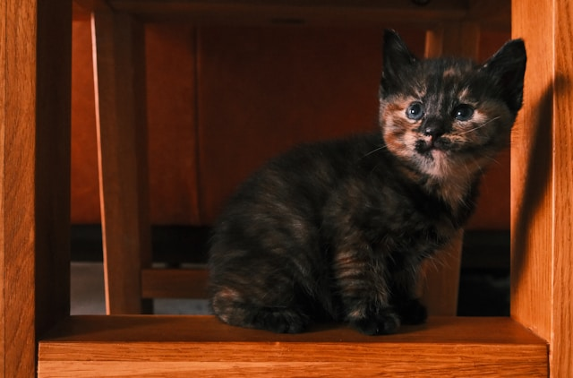
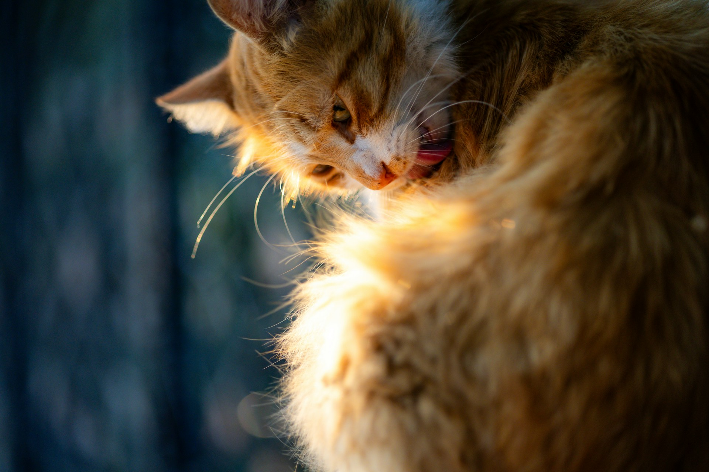

Adoption Made Simple
We work closely with rescuers and volunteers to ensure every cat is healthy, safe, and ready for a new home. Our adoption process is transparent, caring, and focused on finding the right match for both cats and families.
Stray Paws is a community-driven platform dedicated to helping stray cats find safe shelter,
loving families, and the care they deserve. We connect kind-hearted people with cats in need through adoption,
education, and donations that make a real difference.

We work closely with rescuers and volunteers to ensure every cat is healthy, safe, and ready for a new home. Our adoption process is transparent, caring, and focused on finding the right match for both cats and families.
We work closely with rescuers and volunteers to ensure every cat is healthy, safe, and ready for a new home. Our adoption process is transparent, caring, and focused on finding the right match for both cats and families.
Learn More
Donations help provide food, medical care, vaccinations, and temporary shelter for stray cats. Every contribution, no matter the size, helps save lives and gives cats a chance at a better future..
Learn More
Not everyone knows how many stray cats struggle every day. By spreading awareness through social media, school projects, or simple conversations, you help more people understand their situation and take action. Together, we can inspire compassion and turn concern into real help for cats in need.
Learn MoreStray Paws was created with one simple goal:To ensure no stray cat is left behind. We believe compassion, education, and community support can change lives — one paw at a time.

"Helping my first stray cat showed me how small actions can make a big difference.Seeing a cat find a home was the best reward."

"I never though I could help, but fostering one cat changed everything.It feels amazing to watch them grow healthy and happy."

"Sharing rescue posts online helped two kittens get adopted.I learned that awareness really does save lives."

"Feeding stray cat in my area made me more aware of their struggle.Now, I encourage others to care and not ignore them."

"I was scared at first, but helping injured cats made me stronger. Knowing I helped them heal is something I'm proud of."

"Volunteering taught me patience and kindness. Every cat deserves care, and I'm glad I can be part of that journey."